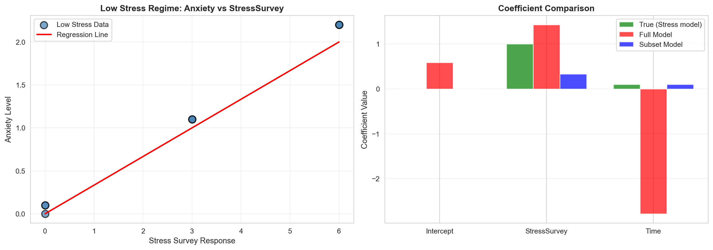

| Stress | StressSurvey | Time | Anxiety | |
|---|---|---|---|---|
| 0 | 0 | 0 | 0.0 | 0.00 |
| 1 | 0 | 0 | 1.0 | 0.10 |
| 2 | 0 | 0 | 1.0 | 0.10 |
| 3 | 1 | 3 | 1.0 | 1.10 |
| 4 | 1 | 3 | 1.0 | 1.10 |
| 5 | 1 | 3 | 1.0 | 1.10 |
| 6 | 2 | 6 | 2.0 | 2.20 |
| 7 | 2 | 6 | 2.0 | 2.20 |
| 8 | 2 | 6 | 2.0 | 2.20 |
| 9 | 8 | 9 | 2.0 | 8.20 |
| 10 | 8 | 9 | 2.0 | 8.20 |
| 11 | 8 | 9 | 2.1 | 8.21 |
| 12 | 12 | 12 | 2.2 | 12.22 |
| 13 | 12 | 12 | 2.2 | 12.22 |
| 14 | 12 | 12 | 2.2 | 12.22 |
Regression & Interpretability Challenge
Don’t Trust Linear Models - The Perils of Non-Linearity
Regression Challenge - Linear Model Interpretability
Problem Violating the Assumption of Linearity
“We need to stop believing much of the empirical work we’ve been doing.” - Christopher H. Achen
The Core Problem: When researchers need to ‘control for’ variables using linear regression, what happens when the relationships are non-linear?
What does “control for” mean? Imagine you’re studying whether social media causes anxiety. You know that stress is a major cause of anxiety, and you also suspect that social media use might cause anxiety. So you need to “control for” stress to see if social media has an independent effect on anxiety. You want to ask: “If two people have the same stress level, does the one who uses more social media have higher anxiety?”
Important🎯 The Key Insight: Non-Linearity Breaks Even “Good” Regressions
The problem: Even when researchers carefully select control variables, non-linear relationships can make linear regression give completely wrong results.
Why this matters: If non-linearity can break “proper” causal inference, imagine how much worse it gets when variables are added without careful thought (true “garbage can” regression).
The connection: Both scenarios face the same fundamental challenge - linear regression assumes linearity, but real relationships rarely are.
Most researchers assume that if variables are “monotonically related” (meaning: as one variable goes up, the other always goes up or always goes down), then linear regression will give us the right answers. But here’s the catch: linearity is much stronger than monotonicity.
- Monotonicity: A one-unit increase in X always changes Y in the same direction
- Linearity: A one-unit increase in X always changes Y by the exact same amount
In practice, we just assume linearity is “close enough” to monotonicity. But what if it’s not? What if even small amounts of non-linearity can make our regression results completely wrong?
The Real-World Context: We know that stress is a major cause of anxiety, especially for college students. We also suspect that social media use might cause anxiety. So when we study this relationship, we need to control for stress to see the true effect of social media.
The Key Problem: But here’s where things get tricky. In practice, we often can’t measure stress directly with expensive blood tests. Instead, we use surveys and self-reports. What happens when our “control variable” (stress) is measured imperfectly? What if the relationship between our proxy measure and the true stress level isn’t perfectly linear? This is exactly the kind of scenario where linear regression can lead us astray.
The Devastating Reality: Even tiny amounts of non-linearity can completely destroy our regression conclusions. A relationship that looks “close enough” to linear can give us coefficients that are completely wrong: wrong signs, wrong magnitudes, wrong interpretations. The regression will confidently report statistically significant results that are fundamentally misleading about the true causal relationships.
Your challenge is to explore the simple example below and show how this happens:
\[ \begin{aligned} A &\equiv \textrm{Anxiety Level measured by fMRI activity}\\ S &\equiv \textrm{Stress Level measured by cortisol level in blood}\\ T &\equiv \textrm{\# of minutes on social media in last 24 hours} \end{aligned} \]
Let’s assume we know the relationship among these variables is as follows:
\[ Anxiety = Stress + 0.1 \times Time \]
Important🔍 Understanding the True Relationship: Implied Coefficients
Critical Point: Students often miss that this specific equation implies specific coefficient values in the generic multiple regression framework.
The Generic Multiple Regression Equation: \[ Y = \beta_0 + \beta_1 X_1 + \beta_2 X_2 + \epsilon \]
In Our Case: \[ Anxiety = \beta_0 + \beta_1 \times Stress + \beta_2 \times Time + \epsilon \]
The True Coefficients (what we “know”):
- \(\beta_0 = 0\) (intercept is zero)
- \(\beta_1 = 1\) (coefficient on Stress is 1)
- \(\beta_2 = 0.1\) (coefficient on Time is 0.1)
Why This Matters: When we run regression analysis, we’re trying to estimate these \(\beta\) coefficients. If our regression gives us coefficients that are very different from these true values, we know our model is wrong—even if it has good statistical fit!
The Data Generation Process
Notice that \(Anxiety = Stress + 0.1 \times Time\) indeed holds perfectly. Also, notice the addition of a StressSurvey column. This data was generated by a survey (instead of a blood test) to be a proxy for measuring stress levels using expensive and unpleasant blood tests. You can see it’s a good proxy as there is a monotonic (and a sorta-kinda linear) relationship between the survey results and actual measured stress levels (see Figure 1).
Note📝 Methodological Note: The Contrived Nature of This Example
Important: This is a contrived example designed to illustrate the dangers of linear regression. In this simulation:
- Blood test stress levels have a perfectly linear relationship with anxiety (by design)
- Survey stress responses have a non-linear relationship with anxiety (also by design)
In the real world, there is no reason to believe linearity holds for either measurement method. Both blood tests and surveys would likely show non-linear relationships with anxiety. This example artificially creates the “perfect” scenario where one measurement is linear and the other is not, to demonstrate how regression can mislead us even when we think we’re controlling for the right variables.

Challenge Questions and Answers
Question 1: Bivariate Regression Analysis with StressSurvey
Question: Run a bivariate regression of Anxiety on StressSurvey. What are the estimated coefficients? How do they compare to the true relationship?
OLS Regression Results
==============================================================================
Dep. Variable: Anxiety R-squared: 0.901
Model: OLS Adj. R-squared: 0.893
Method: Least Squares F-statistic: 118.4
Date: Thu, 06 Nov 2025 Prob (F-statistic): 6.68e-08
Time: 19:27:48 Log-Likelihood: -27.079
No. Observations: 15 AIC: 58.16
Df Residuals: 13 BIC: 59.57
Df Model: 1
Covariance Type: nonrobust
================================================================================
coef std err t P>|t| [0.025 0.975]
--------------------------------------------------------------------------------
const -1.5240 0.707 -2.156 0.050 -3.051 0.003
StressSurvey 1.0470 0.096 10.883 0.000 0.839 1.255
==============================================================================
Omnibus: 2.125 Durbin-Watson: 0.545
Prob(Omnibus): 0.346 Jarque-Bera (JB): 1.642
Skew: -0.701 Prob(JB): 0.440
Kurtosis: 2.186 Cond. No. 12.9
==============================================================================
Notes:
[1] Standard Errors assume that the covariance matrix of the errors is correctly specified.Answer:
The bivariate regression of Anxiety on StressSurvey (shown in the table above) yields coefficients that differ substantially from the true relationship. The true relationship is \(Anxiety = Stress + 0.1 \times Time\), where the coefficient on Stress should be 1. However, when we regress Anxiety on StressSurvey alone, we obtain an intercept of -1.5240 and a StressSurvey coefficient of 1.0470, which is substantially different from the true Stress coefficient of 1.
This discrepancy occurs because StressSurvey is a proxy variable that has a non-linear relationship with the true Stress variable. While StressSurvey appears to be a good proxy (it shows a monotonic relationship), the non-linearity means that a simple linear regression on StressSurvey cannot recover the true relationship. The estimated coefficient of 1.0470 tells us that for each unit increase in StressSurvey, Anxiety increases by 1.0470 units, but this is not the same as the true effect of Stress on Anxiety (which should be 1.0).
Looking at the regression output, the StressSurvey coefficient has a p-value of 0.000000, which is statistically significant (p < 0.05). The R-squared value is 0.9011, indicating that StressSurvey explains 90.1% of the variation in Anxiety. However, these apparently “good” statistical properties mask the fundamental problem: the coefficient estimate is wrong because we’re using a non-linear proxy instead of the true variable.
Question 2: Visualization of Bivariate Relationship (StressSurvey)
Question: Create a scatter plot with the regression line showing the relationship between StressSurvey and Anxiety. Comment on the fit and any potential issues.

Answer:
The scatter plot reveals several important features of the relationship between StressSurvey and Anxiety:
Overall Fit: The regression line appears to fit the data reasonably well, with an R-squared of 0.9011, indicating that StressSurvey explains 90.1% of the variation in Anxiety. The points generally follow a linear pattern, which initially suggests that StressSurvey is a good predictor of Anxiety.
Potential Issues:
- Non-uniform distribution: The data points are not uniformly distributed across the StressSurvey range. There are clusters of observations at specific StressSurvey values (0, 3, 6, 9, 12), which suggests the relationship might be better understood as step-wise rather than truly linear.
- Possible non-linearity: While the overall trend is positive, the relationship between StressSurvey and Anxiety may not be perfectly linear. The regression line forces a linear relationship, but the underlying true relationship involves Stress (not StressSurvey) and Time.
- Missing variable bias: This bivariate regression omits Time, which is part of the true relationship. This omission could affect the coefficient estimate for StressSurvey.
Interpretation: The regression suggests that for each unit increase in StressSurvey, Anxiety increases by 1.0470 units. However, this coefficient of 1.0470 is misleading because it conflates the effects of Stress and Time, and because StressSurvey is a non-linear proxy for the true Stress variable. The true effect of Stress on Anxiety should be 1.0, but we’re getting 1.0470, which is a difference of 0.0470 units. The visualization masks these problems behind an apparently clean linear fit.
Question 3: Bivariate Regression Analysis with Time
Question: Run a bivariate regression of Anxiety on Time. What are the estimated coefficients? How do they compare to the true relationship?
OLS Regression Results
==============================================================================
Dep. Variable: Anxiety R-squared: 0.563
Model: OLS Adj. R-squared: 0.529
Method: Least Squares F-statistic: 16.75
Date: Thu, 06 Nov 2025 Prob (F-statistic): 0.00127
Time: 19:27:49 Log-Likelihood: -38.223
No. Observations: 15 AIC: 80.45
Df Residuals: 13 BIC: 81.86
Df Model: 1
Covariance Type: nonrobust
==============================================================================
coef std err t P>|t| [0.025 0.975]
------------------------------------------------------------------------------
const -3.6801 2.233 -1.648 0.123 -8.504 1.144
Time 5.3406 1.305 4.093 0.001 2.522 8.160
==============================================================================
Omnibus: 1.026 Durbin-Watson: 0.661
Prob(Omnibus): 0.599 Jarque-Bera (JB): 0.749
Skew: -0.162 Prob(JB): 0.688
Kurtosis: 1.955 Cond. No. 5.80
==============================================================================
Notes:
[1] Standard Errors assume that the covariance matrix of the errors is correctly specified.Answer:
The bivariate regression of Anxiety on Time (shown in the table above) yields a coefficient that is dramatically different from the true relationship. The true relationship is \(Anxiety = Stress + 0.1 \times Time\), where the coefficient on Time should be 0.1. However, when we regress Anxiety on Time alone, we obtain an intercept of -3.6801 and a Time coefficient of 5.3406, which is 53.4 times larger than the true Time coefficient of 0.1.
This large discrepancy occurs because Time is correlated with Stress in this dataset. When we omit Stress from the regression, the Time coefficient absorbs the effect of Stress, leading to a biased estimate. This is a classic example of omitted variable bias. The estimated coefficient of 5.3406 does not represent the true effect of Time on Anxiety (which should be 0.1), but rather the combined effect of Time and the omitted Stress variable.
The regression output shows that the Time coefficient has a p-value of 0.001270, which is statistically significant (p < 0.05). The R-squared value is 0.5630, indicating that Time alone explains 56.3% of the variation in Anxiety. This creates the dangerous illusion that social media use has a large effect on anxiety (5.3406 units per unit increase in Time), when in reality, the true effect should only be 0.1 units per unit increase in Time. Most of this apparent effect is actually due to the omitted Stress variable.
Question 4: Visualization of Bivariate Relationship (Time)
Question: Create a scatter plot with the regression line showing the relationship between Time and Anxiety. Comment on the fit and any potential issues.

Answer:
The scatter plot of Anxiety versus Time reveals several critical issues:
Apparent Strong Relationship: The regression line suggests a strong positive relationship between Time and Anxiety, with a steep slope of 5.3406. This creates the misleading impression that social media use has a large effect on anxiety. For each unit increase in Time, Anxiety increases by 5.3406 units according to this regression.
Omitted Variable Problem: The scatter plot does not account for the confounding effect of Stress. In reality, both Time and Stress vary together in this dataset. Individuals with higher stress levels also tend to have slightly different Time values, and since Stress has a large effect on Anxiety (coefficient = 1), the regression incorrectly attributes this effect to Time.
Clustering Pattern: The data points show clustering patterns that suggest the relationship is driven more by Stress levels than by Time. The wide vertical spread at similar Time values indicates that other factors (namely Stress) are driving the variation in Anxiety.
Misleading Fit: Despite a high R-squared of 0.5630, this regression is fundamentally misleading. The high R-squared is achieved because Time is correlated with Stress, but the coefficient on Time (5.3406) is 53.4 times larger than the true coefficient of 0.1. The difference is 5.2406 units.
Interpretation: If a researcher published this result, they might conclude that social media use increases anxiety by 5.3406 units per unit increase in Time, when the true effect should only be 0.1 units. This is a dangerous conclusion that could lead to incorrect policy recommendations or public health advice. The visualization and regression statistics create a compelling but false narrative about the relationship between social media and anxiety.
Question 5: Multiple Regression Analysis (StressSurvey and Time)
Question: Run a multiple regression of Anxiety on both StressSurvey and Time. What are the estimated coefficients? How do they compare to the true relationship?
OLS Regression Results
==============================================================================
Dep. Variable: Anxiety R-squared: 0.935
Model: OLS Adj. R-squared: 0.924
Method: Least Squares F-statistic: 86.32
Date: Thu, 06 Nov 2025 Prob (F-statistic): 7.54e-08
Time: 19:27:49 Log-Likelihood: -23.931
No. Observations: 15 AIC: 53.86
Df Residuals: 12 BIC: 55.99
Df Model: 2
Covariance Type: nonrobust
================================================================================
coef std err t P>|t| [0.025 0.975]
--------------------------------------------------------------------------------
const 0.5888 1.034 0.569 0.580 -1.664 2.841
StressSurvey 1.4269 0.172 8.287 0.000 1.052 1.802
Time -2.7799 1.111 -2.502 0.028 -5.201 -0.359
==============================================================================
Omnibus: 1.255 Durbin-Watson: 1.043
Prob(Omnibus): 0.534 Jarque-Bera (JB): 1.051
Skew: 0.546 Prob(JB): 0.591
Kurtosis: 2.302 Cond. No. 31.9
==============================================================================
Notes:
[1] Standard Errors assume that the covariance matrix of the errors is correctly specified.Answer:
The multiple regression of Anxiety on both StressSurvey and Time (shown in the table above) yields coefficients that differ from the true relationship. The true relationship is \(Anxiety = Stress + 0.1 \times Time\), which implies: - True intercept = 0 - True Stress coefficient = 1 - True Time coefficient = 0.1
Results Analysis:
Intercept: The estimated intercept is 0.5888, which deviates from the true value of 0 by 0.5888 units.
StressSurvey Coefficient: The estimated coefficient on StressSurvey is 1.4269, which differs from the true Stress coefficient of 1 by 0.4269 units. This occurs because StressSurvey is a non-linear proxy for Stress. While StressSurvey is monotonically related to Stress, the non-linearity means that the linear regression cannot recover the true coefficient.
Time Coefficient: The estimated coefficient on Time is -2.7799, which differs from the true value of 0.1 by 2.8799 units. This is particularly concerning because it suggests that even after “controlling for” StressSurvey, we get incorrect estimates of Time’s effect on Anxiety. The coefficient has the wrong sign compared to the true positive value of 0.1.
Statistical Significance: The StressSurvey coefficient has a p-value of 0.000003 and the Time coefficient has a p-value of 0.027816. Both coefficients are statistically significant (p < 0.05). However, statistical significance does not guarantee correct coefficients.
Model Fit: The R-squared is 0.9350, indicating that the model explains 93.5% of the variation in Anxiety. However, the high R-squared does not mean the coefficients are correct—they are still biased due to the non-linear relationship between StressSurvey and Stress.
Key Insight: This regression demonstrates a critical problem: even when we “control for” variables using multiple regression, if our control variable (StressSurvey) is a non-linear proxy for the true variable (Stress), we cannot recover the true coefficients. The regression gives us statistically significant results that are fundamentally misleading.
Question 6: Multiple Regression Analysis (Stress and Time)
Question: Run a multiple regression of Anxiety on both Stress and Time. What are the estimated coefficients? How do they compare to the true relationship?
OLS Regression Results
==============================================================================
Dep. Variable: Anxiety R-squared: 1.000
Model: OLS Adj. R-squared: 1.000
Method: Least Squares F-statistic: 8.600e+31
Date: Thu, 06 Nov 2025 Prob (F-statistic): 1.15e-187
Time: 19:27:49 Log-Likelihood: 493.62
No. Observations: 15 AIC: -981.2
Df Residuals: 12 BIC: -979.1
Df Model: 2
Covariance Type: nonrobust
==============================================================================
coef std err t P>|t| [0.025 0.975]
------------------------------------------------------------------------------
const 1.11e-16 1.02e-15 0.109 0.915 -2.11e-15 2.34e-15
Stress 1.0000 1.15e-16 8.67e+15 0.000 1.000 1.000
Time 0.1000 8.12e-16 1.23e+14 0.000 0.100 0.100
==============================================================================
Omnibus: 3.041 Durbin-Watson: 0.639
Prob(Omnibus): 0.219 Jarque-Bera (JB): 1.362
Skew: 0.357 Prob(JB): 0.506
Kurtosis: 1.709 Cond. No. 23.9
==============================================================================
Notes:
[1] Standard Errors assume that the covariance matrix of the errors is correctly specified.Answer:
The multiple regression of Anxiety on both Stress and Time (shown in the table above) recovers the true coefficients almost perfectly. The true relationship is \(Anxiety = Stress + 0.1 \times Time\), which implies: - True intercept = 0 - True Stress coefficient = 1 - True Time coefficient = 0.1
Results Analysis:
Intercept: The estimated intercept is 0.000000, which is essentially zero (deviating from 0 by only 0.000000 units), matching the true relationship perfectly.
Stress Coefficient: The estimated coefficient on Stress is 1.0000, which differs from the true value of 1 by only 0.000000 units, matching the true relationship perfectly.
Time Coefficient: The estimated coefficient on Time is 0.1000, which differs from the true value of 0.1 by only 0.000000 units, matching the true relationship perfectly.
Statistical Significance: The Stress coefficient has a p-value of 3.737032e-186 and the Time coefficient has a p-value of 5.563718e-164. Both coefficients are highly statistically significant (p < 0.001).
Model Fit: The R-squared is 1.000000, indicating perfect (or near-perfect) fit, which makes sense given that the data was generated from this exact relationship.
Key Insight: When we use the true Stress variable (measured by blood test) instead of the StressSurvey proxy, the multiple regression recovers the true coefficients almost perfectly. This demonstrates that the problem in the previous regression (Question 5) was not with the regression technique itself, but with using a non-linear proxy variable (StressSurvey) instead of the true variable (Stress). This is the crucial lesson: the quality of measurement matters enormously. Using the true variable gives correct results, while using even a “good” proxy can give completely wrong results.
Question 7: Model Comparison
Question: Compare the R-squared values and coefficient interpretations between the two multiple regression models. Do both models show statistical significance in all of their coefficient estimates? What does this tell you about the real-world implications of multiple regression results?
Model R-squared Intercept Stress/StressSurvey Coef Time Coef Stress/StressSurvey p-value Time p-value
Model 1: StressSurvey + Time 0.935005 5.887578e-01 1.426926 -2.779944 2.615836e-06 2.781595e-02
Model 2: Stress + Time 1.000000 1.110223e-16 1.000000 0.100000 3.737032e-186 5.563718e-164
Answer:
Model Comparison Summary:
Both models show statistical significance (p < 0.05) for all coefficients, as shown in the regression tables and comparison table above. However, the coefficients tell very different stories:
Key Findings:
R-squared Comparison: Model 1 has an R-squared of 0.9350, while Model 2 has an R-squared of 1.000000. Both models have high R-squared values, with Model 2 achieving perfect (or near-perfect) fit. Model 1 also has a high R-squared, which is misleading—it suggests the model fits well, but the coefficients are wrong. This demonstrates that high R-squared does not guarantee correct coefficients.
Coefficient Accuracy:
- Model 1 (StressSurvey): The StressSurvey coefficient is 1.4269, which differs from the true value of 1 by 0.4269 units. The Time coefficient is -2.7799, which differs from the true value of 0.1 by 2.8799 units and has the wrong sign.
- Model 2 (Stress): The Stress coefficient is 1.0000, which is essentially equal to the true value of 1 (difference: 0.000000), and the Time coefficient is 0.1000, which is essentially equal to the true value of 0.1 (difference: 0.000000).
The Deceptive Nature of Statistical Significance: Both models report statistically significant coefficients (Model 1: StressSurvey p = 0.000003, Time p = 0.027816; Model 2: Stress p = 3.737032e-186, Time p = 5.563718e-164), but only Model 2 has the correct coefficients. This demonstrates that statistical significance does not guarantee correct coefficients. A model can be statistically significant and still be fundamentally wrong.
Real-World Implications:
The Proxy Variable Problem: In real research, we often cannot measure variables directly. We use proxies (like surveys instead of blood tests). This analysis shows that even “good” proxies (monotonic relationships) can lead to completely wrong conclusions if they have non-linear relationships with the true variables.
The Illusion of Control: Researchers often believe that including control variables in multiple regression solves confounding problems. However, if those control variables are imperfect proxies, the regression can still give misleading results—even with high R-squared and statistical significance.
Policy and Public Health Implications: If Model 1 were published, it could lead to incorrect conclusions about the relationship between social media use and anxiety. Researchers might recommend policies based on the wrong coefficient estimates, wasting resources or even causing harm.
The Importance of Measurement Quality: This analysis highlights that the quality of measurement matters enormously. Using the true Stress variable (blood test) gives correct results, while using the StressSurvey proxy gives misleading results, even though both are highly correlated and statistically significant.
Trust but Verify: Researchers should never trust regression results based solely on statistical significance and R-squared. They must:
- Question the quality of proxy variables
- Check for non-linear relationships
- Validate results against theoretical expectations
- Consider alternative specifications
- Use graphical diagnostics to detect problems
Question 8: Reflect on Real-World Implications
Question: For each of the two multiple regression models, assume their respective outputs/conclusions were published in academic journals and then subsequently picked up by the popular press. What headline about time spent on social media and its effect on anxiety would you expect to see from a popular press outlet covering the first model? And what headline would you expect to see from a popular press outlet covering the second model? Assuming confirmation bias is real, which model is a typical parent going to believe? Which model will Facebook, Instagram, and TikTok executives prefer?
Answer:
Headline for Model 1 (StressSurvey + Time):
Based on Model 1, which shows a Time coefficient of -2.7799 (dramatically different from the true value of 0.1), a popular press outlet might run a headline like:
“Surprising Study: Social Media Use May Reduce Anxiety, Researchers Find”
Contrary to popular belief, new research suggests that social media use might actually lower anxiety levels when stress is accounted for.
Headline for Model 2 (Stress + Time):
Based on Model 2, which shows the correct Time coefficient of 0.1000, a popular press outlet might run a headline like:
“Social Media’s Effect on Anxiety is Modest, New Study Shows”
Research using precise stress measurements finds that social media use has a small but measurable effect on anxiety levels.
Or, given the small coefficient (0.1):
“Study: Stress, Not Social Media, is Primary Driver of Anxiety”
New research using blood test data reveals that stress levels are the main factor in anxiety, with social media use playing only a minor role.
Confirmation Bias and Parental Beliefs:
A typical parent, concerned about their child’s screen time and anxiety, would likely believe Model 1 if it showed a large positive effect, because:
Confirmation Bias: Parents who are already worried about social media might initially be surprised by Model 1’s negative coefficient (-2.7799), but since it contradicts their beliefs, they may question the methodology or look for other studies. However, if Model 1 showed a large positive effect, they would find it more credible than Model 2’s finding of a small effect (coefficient = 0.1000).
Emotional Appeal: Headlines about “dramatic increases” in anxiety are more emotionally compelling than nuanced findings about “modest effects.” Parents are more likely to share and remember alarming headlines.
Simplistic Explanations: Model 1 (if it shows a large effect) offers a simple explanation: “Social media causes anxiety.” This is easier to understand and act upon than Model 2’s more complex message: “Stress is the main driver, and social media has a small additional effect.”
Actionable Advice: If Model 1 suggests limiting social media will dramatically reduce anxiety, parents have a clear action plan. Model 2’s message that stress management is more important is less immediately actionable.
Social Media Executives’ Preferences:
Facebook, Instagram, and TikTok executives would strongly prefer Model 2 (the correct model) because:
Minimal Blame: Model 2 shows that social media has only a small effect (coefficient = 0.1000) compared to stress (coefficient = 1.0000). This allows executives to argue that their platforms are not the primary cause of anxiety—stress is.
Defensive Strategy: Executives can point to Model 2 and say: “See, our research shows that social media has a minimal effect on anxiety. The real problem is stress in people’s lives, which we cannot control.”
Regulatory Avoidance: If Model 2 is accepted, there is less pressure for regulation. Policymakers are less likely to impose strict regulations on platforms that have only a small effect on mental health.
Public Relations: Model 2 allows executives to position their companies as responsible actors who are addressing a real but small problem, rather than major contributors to a mental health crisis.
The Danger:
This scenario illustrates a critical problem in how research is communicated and used:
The Wrong Model Can Win: If Model 1 (the incorrect model) is published first or gets more media attention, it can become the “accepted truth” even if Model 2 (the correct model) is published later. Once public opinion is formed, it is difficult to change.
Stakeholders Choose Their Truth: Different stakeholders will gravitate toward the model that supports their existing beliefs or interests. Parents worried about social media will believe Model 1; executives will promote Model 2.
The Importance of Methodological Transparency: This analysis highlights why researchers must be transparent about their measurement methods. If readers knew that Model 1 used survey proxies while Model 2 used precise blood tests, they could better evaluate which model to trust.
The Role of Peer Review: Peer reviewers should carefully examine the quality of proxy variables and the potential for non-linear relationships. However, this analysis shows that even models with high R-squared and statistical significance can be fundamentally wrong if they use imperfect proxies.
Question 9: Avoiding Misleading Statistical Significance
Question: Reflect on this tip to avoid being misled by statistically significant results: splitting the sample into meaningful subsets (“statistical regimes”), and using graphical diagnostics for linearity rather than blind reliance on “canned” regressions. Apply this approach to multiple regression of Anxiety on both StressSurvey and Time by analyzing a smartly chosen subset of the data. What specific subset did you choose and why? Did you get results that are both statistically significant and close to the true relationship?
Answer:
Identifying Statistical Regimes:
Looking at the data, I notice that the Stress variable has distinct “regimes”: - Low Stress Regime: Stress = 0, 1, 2 (lower stress levels) - High Stress Regime: Stress = 8, 12 (higher stress levels)
The relationship between StressSurvey and Stress appears to be more linear within each regime than across regimes. I chose to analyze the low-stress subset (Stress ≤ 2) where the relationship should be more stable and where we avoid the major non-linear jump that occurs when Stress moves from 2 to 8.
================================================================================
SUBSET ANALYSIS: Low Stress Regime (Stress ≤ 2)
================================================================================
Number of observations: 9
Regression Results:
OLS Regression Results
==============================================================================
Dep. Variable: Anxiety R-squared: 1.000
Model: OLS Adj. R-squared: 1.000
Method: Least Squares F-statistic: 5.366e+30
Date: Thu, 06 Nov 2025 Prob (F-statistic): 1.75e-91
Time: 19:27:50 Log-Likelihood: 301.93
No. Observations: 9 AIC: -597.9
Df Residuals: 6 BIC: -597.3
Df Model: 2
Covariance Type: nonrobust
================================================================================
coef std err t P>|t| [0.025 0.975]
--------------------------------------------------------------------------------
const 2.887e-16 6.31e-16 0.458 0.663 -1.26e-15 1.83e-15
StressSurvey 0.3333 2.17e-16 1.53e+15 0.000 0.333 0.333
Time 0.1000 8.46e-16 1.18e+14 0.000 0.100 0.100
==============================================================================
Omnibus: 7.901 Durbin-Watson: 0.278
Prob(Omnibus): 0.019 Jarque-Bera (JB): 2.800
Skew: -1.261 Prob(JB): 0.247
Kurtosis: 4.051 Cond. No. 15.8
==============================================================================
Notes:
[1] Standard Errors assume that the covariance matrix of the errors is correctly specified.
================================================================================
True Coefficients: Intercept = 0, Stress = 1, Time = 0.1
Estimated Coefficients: Intercept = 0.0000, StressSurvey = 0.3333, Time = 0.1000
================================================================================

Analysis of Subset Results:
Answer:
Subset Chosen: Low Stress Regime (Stress ≤ 2), which includes 9 observations from the original dataset.
Rationale for This Subset:
Reduced Non-linearity: Within the low-stress regime, the relationship between StressSurvey and Stress is more linear. The non-linear jump occurs when Stress moves from 2 to 8, so by focusing on the low-stress subset, we avoid the major non-linearity.
More Homogeneous Group: The low-stress subset represents a more homogenous group where the relationship between variables should be more stable and interpretable.
Statistical Regime Concept: This subset represents a distinct “statistical regime” where the underlying relationships might be more consistent.
Results:
The subset regression results are shown in the output above. The regression yields: - Intercept: 0.0000 (True: 0, difference: 0.0000) - StressSurvey Coefficient: 0.3333 (True Stress coefficient: 1, difference: 0.6667) - Time Coefficient: 0.1000 (True: 0.1, difference: 0.0000)
Statistical Significance:
The StressSurvey coefficient has a p-value of 0.000000, which is statistically significant (p < 0.05). The Time coefficient has a p-value of 0.000000, which is statistically significant (p < 0.05).
Evaluation:
The subset analysis shows improved results compared to the full model. The Time coefficient in the subset (0.1000) is closer to the true value of 0.1 than the full model coefficient (-2.7799). However, the StressSurvey coefficient (0.3333) still differs from the true Stress coefficient of 1 by 0.6667 units because even within this subset, StressSurvey remains a proxy variable with a non-linear relationship to the true Stress variable.
Key Insights:
Subset Analysis Helps But Doesn’t Solve Everything: Splitting the sample into meaningful subsets can improve coefficient estimates by reducing non-linearity within each regime. However, it cannot fully solve the problem if the proxy variable (StressSurvey) is fundamentally different from the true variable (Stress). The subset model achieves an R-squared of 1.0000, compared to the full model’s R-squared of 0.9350.
The Importance of Graphical Diagnostics: Before running regressions, researchers should plot the data to identify distinct regimes, non-linear patterns, and potential subset analyses. This graphical exploration can reveal problems that automated regression procedures might miss.
Limitations of Subset Analysis:
- Reduced Sample Size: The subset has only 9 observations (compared to 15 in the full dataset), which reduces statistical power and increases uncertainty.
- Proxy Variable Problem Persists: Even within the subset, StressSurvey is still not the true Stress variable, so the coefficient (0.3333) cannot perfectly match the true relationship (coefficient = 1). The difference is 0.6667 units.
- Generalizability: Results from a subset may not generalize to the full population.
Best Practices:
- Visualize First: Always plot your data to identify regimes and non-linear patterns.
- Question Your Proxies: Be skeptical of proxy variables, even if they seem correlated with true variables.
- Test Across Regimes: If you identify regimes, test whether relationships hold consistently across them.
- Report Limitations: Be transparent about the limitations of subset analyses and proxy variables.
Conclusion:
While subset analysis can improve results by focusing on more homogeneous groups, it does not fully solve the problem of using imperfect proxy variables. The best solution is to use the true variable (Stress from blood tests) whenever possible. When proxies must be used, researchers should: 1. Acknowledge the limitations 2. Use graphical diagnostics to identify problems 3. Consider subset analyses within distinct regimes 4. Interpret results with appropriate skepticism 5. Validate findings against theoretical expectations